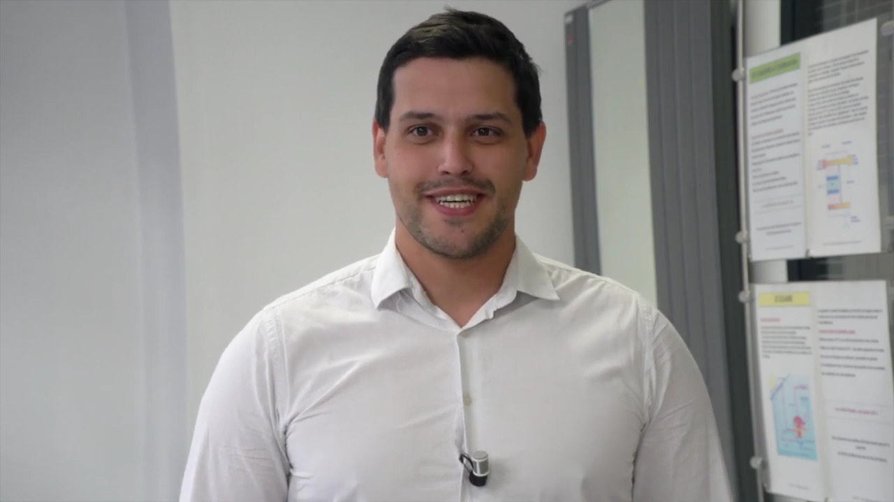
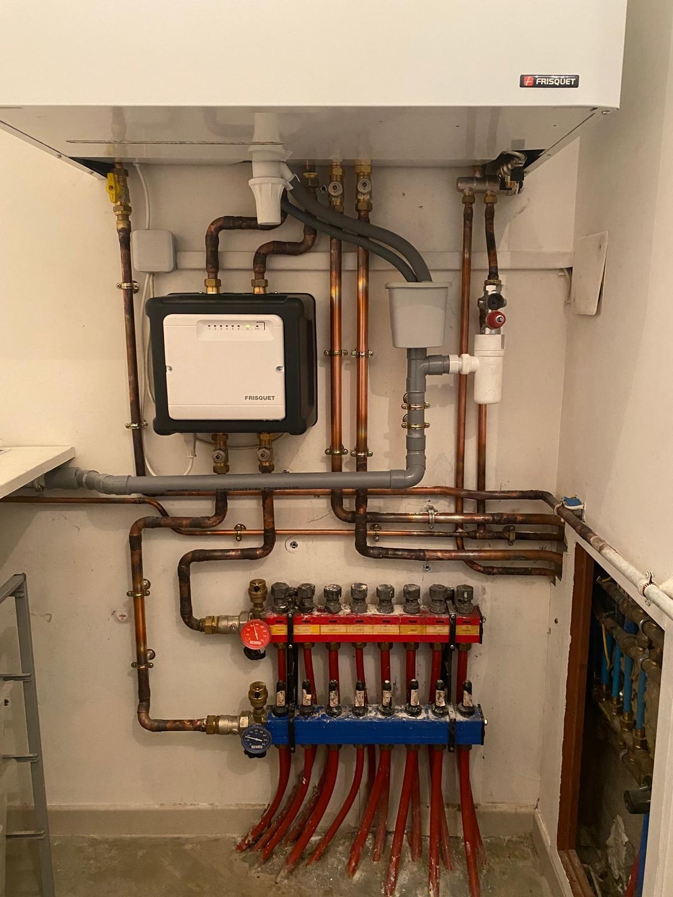
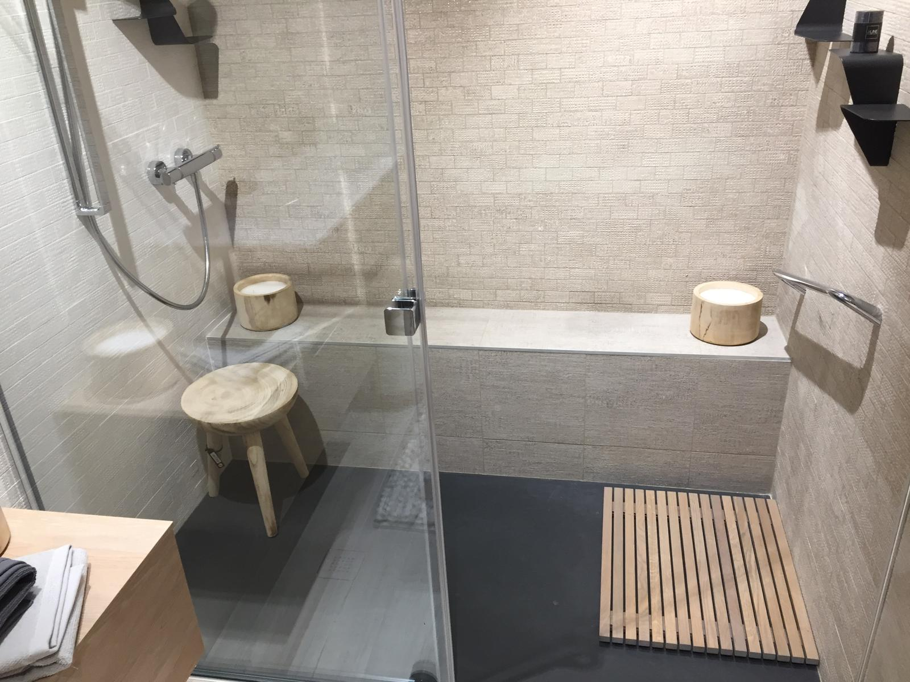

Plombier · Lyon 2e
Qualitec Chauffage
Ancrée dans l’histoire familiale depuis 1937, Qualitec prolonge et renouvelle un savoir faire familial, guidé par la rigueur et l’exigence.
Un diagnostic clair et compréhensible. Un devis transparent et sans surprise. Des interventions ponctuelles, rigoureuses et dans les règles de l’art. Un contrôle et une mise en service. Un suivi garanti pour votre tranquillité.
- 4,6 ★ sur Google (34 avis)

Nos prestations
- Dépannage et recherche de fuite
- Installation sanitaire
- Chauffe-eau et ballon
- Rénovation de salle de bain
En images


Nous trouver
42 Rue de Condé, 69002 Lyon
| Lundi | 06:00–22:00 |
| Mardi | 06:00–22:00 |
| Jeudi | 06:00–22:00 |
| Vendredi | 06:00–22:00 |
| Samedi | 06:00–22:00 |
| Dimanche | 06:00–22:00 |